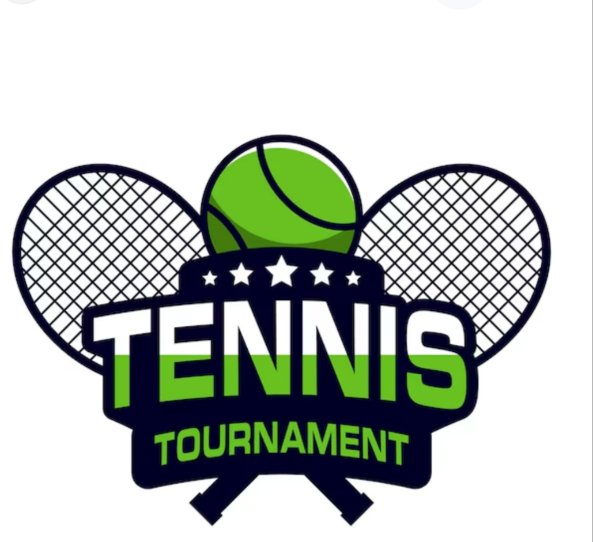
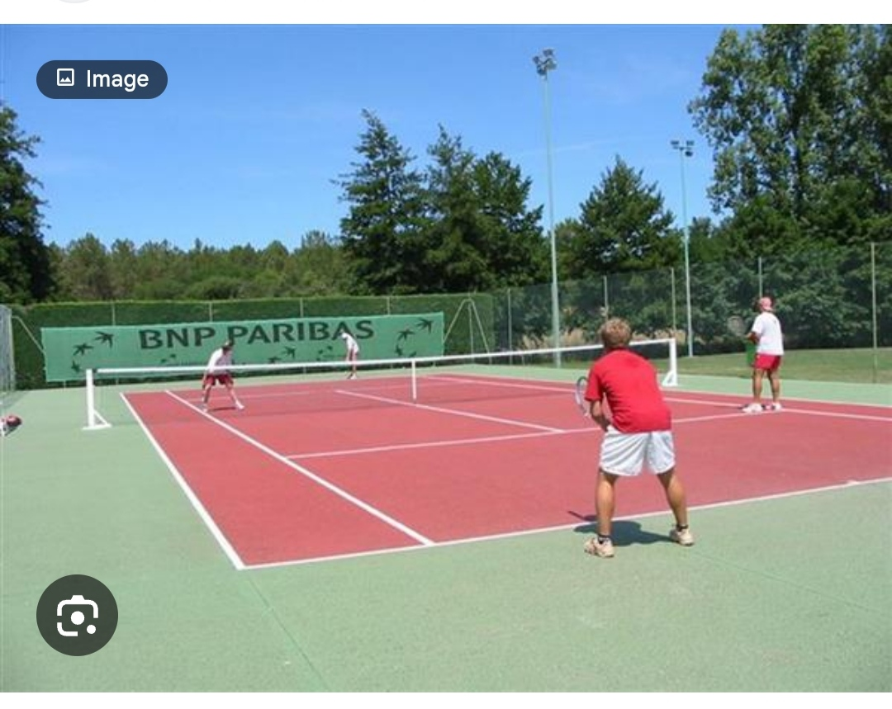

🎾 TENNIS
📖 1. DEFINITION
Le tennis est un sport de raquette qui oppose soit deux joueurs, soit quatre joueurs formant deux équipes. Le but est de frapper la balle et de la renvoyer vers le terrain adverse.
📜 2. HISTORIQUE
.jpg)
Le tennis moderne trouve ses racines dans le jeu de paume médiéval français au 12ème siècle. Transformé en lawn tennis (tennis en herbe) par les Britanniques au 19ème siècle, le sport s'est structuré avec le brevet de Walter Clopton Wingfield en 1874. L'"Ère Open" débute en 1968, professionnalisant le jeu et unifiant les tournois du Grand Chelem.
🧠 3. CONCEPT
.jpg)
Le concept du tennis repose sur la rapidité, la précision et la stratégie. Il s'agissait de renvoyer une balle en cuir par-dessus le filet, d'abord à main nue, puis avec un gant ou une raquette.
🚀 4. EVOLUTION

🎾 7-16ème siècle : Né en France, le jeu de paume est pratiqué
dans les monastères et la noblesse.
🎾 1874 : Clopton Walter Wingfield dépose le brevet du "lawn
tennis" en Angleterre.
🎾 1877 : Premier tournoi de Wimbledon organisé par "All
England Croquet and Lawn Tennis Club".
🎾 1900 : Création de la Coupe Davis, compétition par
équipes.
🎾 Aujourd'hui, le tennis est un sport très populaire dans le
monde entier.